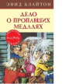

Дело о пропавших медалях

И снова «Секретная семёрка» берётся за расследование! Причём в этот раз ребята решили заняться сразу двумя делами. И конечно же несносная сестрица Джека Сьюзи стала совать в них свой нос. Но, как говорится, нет худа без добра, и неуёмное любопытство Сьюзи неожиданно помогло «Секретной семёрке» выпутаться из очень опасной ситуации и поймать воров, укравших медали старого генерала.